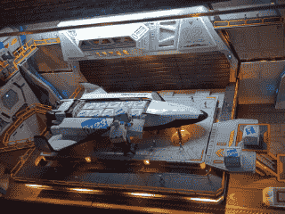

This changelog is not a standard part of Makompile because it depends on my particular stack.
Last updated on 2025-12-01
Last updated on 2025-11-16
Last updated on 2025-09-14
Last updated on 2025-09-13
Last updated on 2025-08-10
Last updated on 2025-08-04
Last updated on 2025-07-28
Last updated on 2025-07-27
Last updated on 2025-07-25
Only the 15 most recently updated files are listed.